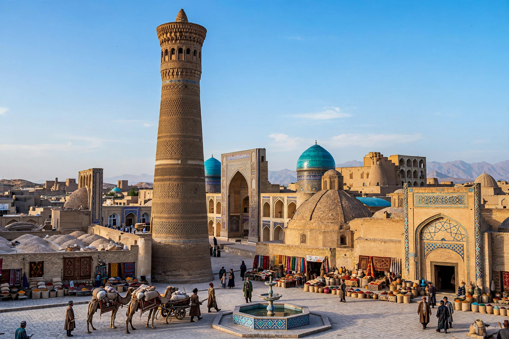

Khanate of Bukhara

The Khanate of Bukhara (also the Bukharan Khanate) was an Uzbek state in Central Asia that existed from 1501 to 1785, centered on the oasis city of Bukhara and controlling, at its height, much of the region between the Amu Darya and Syr Darya rivers — the historical lands of Transoxiana — with territories in present-day Uzbekistan, Tajikistan, Turkmenistan, and Kazakhstan.
Shaybanid period
The khanate was founded by Muhammad Shaybani, a descendant of Genghis Khan's grandson Shiban, who led the Uzbeks out of the Qipchaq steppe and conquered Samarkand and Bukhara from the Timurids around 1500–1501, ending the dynasty of Timur in Central Asia. Shaybani was killed by Shah Ismail I of Safavid Persia at the Battle of Merv in 1510, but the khanate endured. Under Abdullah Khan II (r. 1583–1598) the state reached its greatest extent and Bukhara was adorned with monumental madrasas, mosques, and trading domes, profiting from overland Eurasian trade and a continuing slave trade.
Janid period and decline
In 1599 power passed to the Janids (Ashtarkhanids), a branch of the Tuqay-Timurids from Astrakhan. The 17th century saw celebrated building at the Registan in Samarkand under Yalangtush Bakhodur, but the khanate grew politically fragmented, beset by dynastic appanages, Khivan invasions, and economic decline as oceanic trade supplanted the caravan routes. Nader Shah of Persia invaded and subjugated Bukhara in 1740. In 1785 Shah Murad of the Manghit clan formally set aside the Janid puppet khans and took power as amir, converting the khanate into the Emirate of Bukhara, which lasted until 1920.
Culture
The khanate was a center of Sunni Islamic scholarship, Naqshbandi Sufism, and Persian-language literature, even as its ruling class was Turkic-speaking; bilingual Persian–Chagatai culture flourished at court and in Bukhara's hundreds of madrasas and mosques.